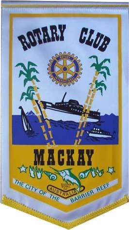
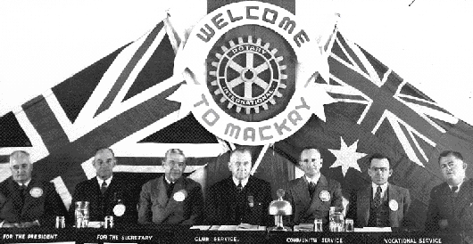
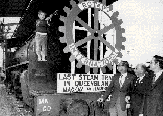

|
|
| SEARCH |
Rotary Club of Mackay |
| District 9570 |
|
In
July 1926 Rotarian Tom McWilliam of Brisbane Rotary Club arrived in
Mackay with a commission from Ches. Perry of Rotary International to
investigate the possibility of a Rotary Club being formed in Mackay and
to submit a report. He called on a number of citizens and explained the
purpose of his visit. He subsequently invited these gentlemen to have
lunch with him at the Grand Hotel Cnr. Victoria, Brisbane St. (where AAA
Stationery now stands.) After telling his guests what Rotary was about,
there followed a frank discussion. A preliminary meeting was held at the Imperial Hotel, Victoria St. Tuesday 27th July 1926. Mr W. A. Amiet occupied the chair. A committee of seven was elected and thus the Rotary Club of Mackay was formed, pending the granting of a Charter. The Charter dated 16th October 1926 No.2418 was received in December 1926. 1920-30s Boy Scout Movement. In the 1926-29 period, considerable assistance was given to the Boy Scout movement in Mackay. Rotarian John Michelmore Snr. made an acre of ground available to grow vegetables under the supervision of himself and other Rotarians, who also supervised the marketing of the produce. The proceeds of this went towards the building of a Scout Den in Victoria Park. In later years, Glendarragh Campsite, later named at the opening of Rowallan Park, became a Club project and many working bees have taken place there. The late Rotarian Dave Pratt made this his special project. Mayor Ian Wood officially opened Rowallan Park 12th September 1953. 1940s Clothes for Britain. The Red Cross called on Rotary to conduct an appeal for “Clothes for Britain” lasting over a period of two weeks. Clothes were collected by Boy Scouts, cleaned free of charge by Rotarian Walter Beatty's steam laundry, sorted by the CWA, and packed and cased by Rotarians - 160 cases of clothing covering boys, girls, men and women were assembled and dispatched. Troops in Transit. During the war years special trains were running daily, closely following on each other conveying many thousands of tons of war material and equipment to northern areas. A 24-hour service, seven days a week was instituted so that men and women in uniform were provided with hot meals and refreshments at a nominal cost. Rotarians were prominent in organising this continuous service. Owing to excessive wet weather causing floods and hold-ups the troops were frequently stranded at Mackay in increasing numbers. The Rotary Club of Mackay was instrumental in establishing and conducting a Billeting Committee who arranged for thousands of those in the services to be billeted in private homes. In one instance 1000 American troops were billeted for the three days they were delayed. During this period, The Rotary Club of Mackay: Organised the local effort in the first Victory War Loan Pledge scheme. Promoted a scheme whereby parcels were sent to relatives of members or to Rotarians on Active Service. Maintained an open welcome to all on War Service as guests of Rotarians. Made Food for Britain contributions of £106. Was responsible for launching the War Savings Campaign. Posted notices in H.O. American Air Force and American Red Cross in Mackay extending hospitality at Club meetings. Were instrumental in establishing Air Raid Wardens in Mackay - the principal officers being Rotarians The 56th District Assembly at Mackay on 6 & 7 September, 1946 was only the second district assembly to be held in Queensland. Delegates pictured are (l to r): WR Kingwill, Past President South Brisbane; RC Hancock, Past Governor, Brisbane; Angus Mitchell, RI Representative, Melbourne; Percy J Allen, Governor, South Brisbane; Clem Scully, President Elect, Valley; Fred Field, President, Mackay; Len Cain, Secretary, Mackay. 1960s Queensland's Last Steam Train. History was made in Mackay on Sunday 21st December 1969 when the last official journey by a steam train in Queensland was made. Thanks to the cooperation of the Railway Department, the Rotary Club of Mackay sponsored the project, all proceeds from which will benefit the Mackay Ambulance Brigade. University Centre. The club and individual members gave financial and general help to the Mackay University Centre and were largely responsible for the raising of $18,000 for North Queensland University Residential Colleges located in Townsville. 1970s RYLA. The club participated in the first Rotary Youth Leadership Award (RYLA) project held by Rotary District 255. The Club's awardees were Mr G Stockie for his work in the Boy Scouts movement and Mr E Bryant for his work with the Junior Rugby League. They reported that the week's seminar was very informative and rewarding. 1980s Sale of Paintings by Australian Outback Artists. This was a joint venture project in conjunction with Mackay West Rotary Club. A joint planning committee of the two clubs was formed and commenced meeting in early October 1987. A very satisfactory result was achieved from the exhibition, which took place in April at the Mackay Entertainment Centre. From a total of 75 paintings received for the exhibition, 50 were sold as well as 14 prints, and in addition an Art Union was arranged in which all 2000 tickets were sold. The overall result was that $18,000.00 was raised for distribution between the two clubs, and has allowed our Club to make some generous donations to charitable and like bodies. "The Best of the Australian Outback Artists" Exhibition. The exhibition was conducted for a second time from 17th-21st May at the Mackay Entertainment Centre. It was a joint project by the Mackay and Mackay West Rotary Clubs and supervised by the following committee members: - Frank Hurley, Mike Loveday, Ian Angus (Mackay West) Stewart Boyd, Rick Beasley, Stan Fursman (Mackay). The sources of funds for the project were sponsorships, sale of paintings and prints, an art union and sale of catalogues. 113 Paintings were received together with a number of framed and unframed prints and books on the artists. Sales totalled $74,320. 1990s Environmental Projects. In March the Club participated in the National Campaign to Cleanup Australia as the major project for the year. The Club was a control point co-ordinator through the Mackay City Council's area. Responsibilities included registration of participants, provision of refreshments, distribution of collection bags, provision of safety advice and sharps containers and arrangements for the disposal of the collected rubbish. The project was very successful with 60 children and 30 adults formally registering as participants. In all, over 100 bags of rubbish were collected. 2000s Snow's Place - Nebo. Conceived and led throughout by Wyn Cook, ably assisted by Warren Bridson and Marcella Massie, our club signed a Memorandum of Understanding with Nebo Shire Council to provide on-going support with the development of Snow's Place - a tourist and cultural centre project. Nebo is a small country town 90 km from Mackay, too small to sustain a Rotary Club, but in need of the support Rotary can offer as it builds economic sustainability for its community. We have been involved in a number of meetings with Council and others. The first round of community consultation has been completed, and we are now involved in a series of meetings from which a concept plan will be developed. At this stage, it is envisaged that the centrepiece of Snow's Place will be Snow's cottage, supported by a range of activities, including food concessions and amenities, probably the Nebo Shire museum and may also include the Shire library. A very significant long-term project for Nebo Shire, and for our club. To demonstrate our commitment our club this year has committed $5,000 to Snow's Place, to be held in trust until such time as we are called upon to make our first financial contribution. It is anticipated that this project may well take three (or more) years to reach fruition. Our congratulations to Wyn Cook for identifying and following through this very significant and long-term community service project, a project where our club, in partnership with the Nebo Shire Council, can make a real long-term difference to a rural community. The overall project is valued at more than $2.5 million dollars. Rotary Club of Mackay PO Box 373, Mackay Queensland, 4740 Australia. |
| This page was compiled and provided by PDG John Louttit |
RGHF members, who have been invited to this page, may register RGHF members, who have been invited to this page, may register If a DGE/N/D joins prior to their year, they will have more exposure to Rotary's Global History by their service year. This will be beneficial to all concerned. *Based on paid members, subscribers, Facebook friends, Twitter followers, mobile app users, History Library users, web pages, and articles about Rotary's Global History RGHF Home | Disclaimer | Privacy | Usage Agreement | RGHF on Facebook | Subscribe | Join RGHF | |